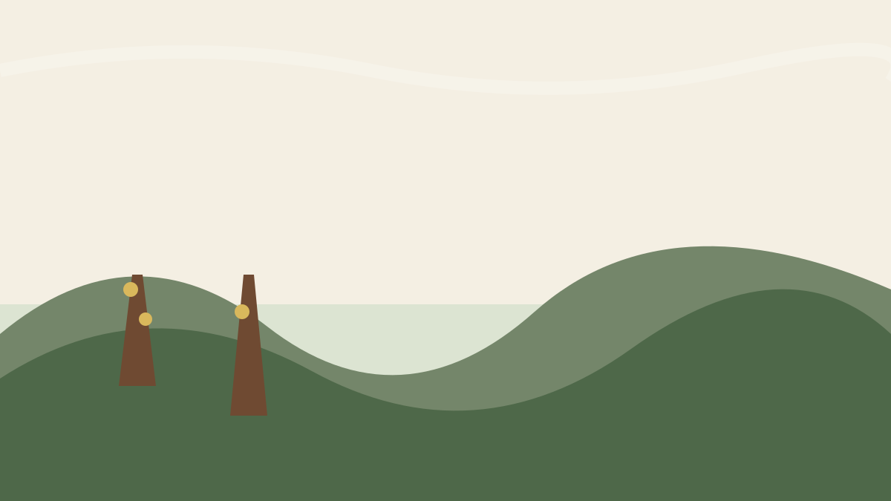
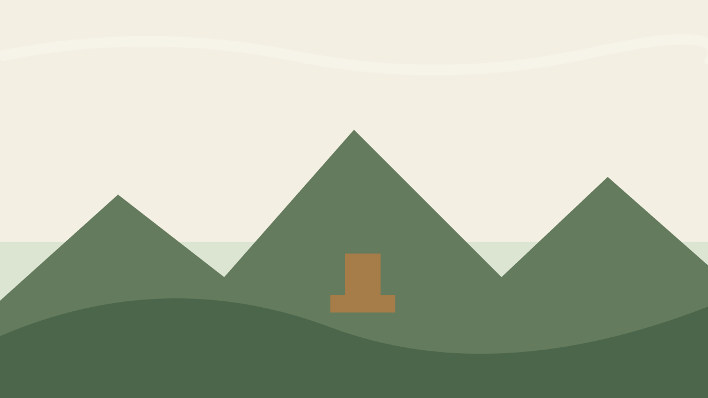
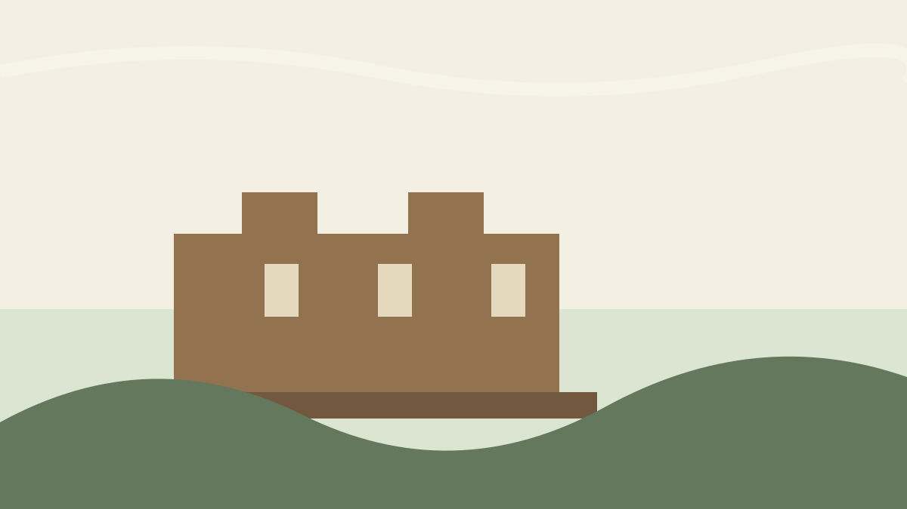
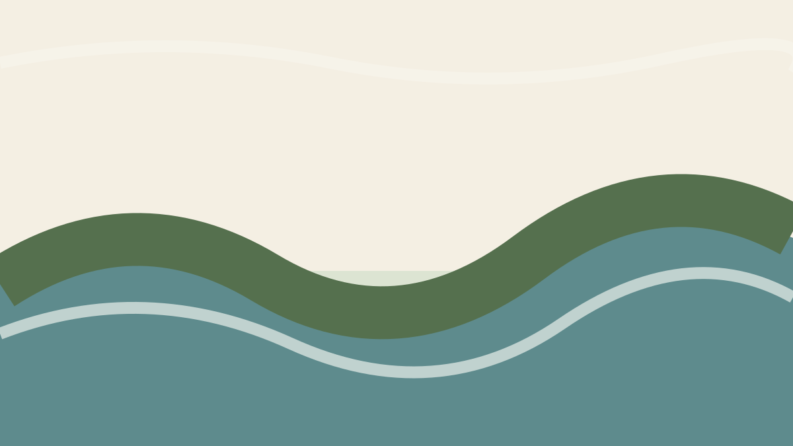
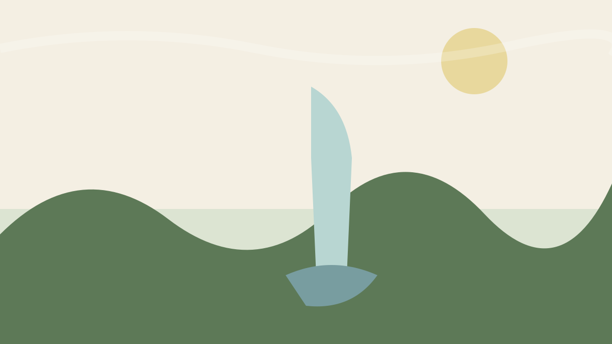
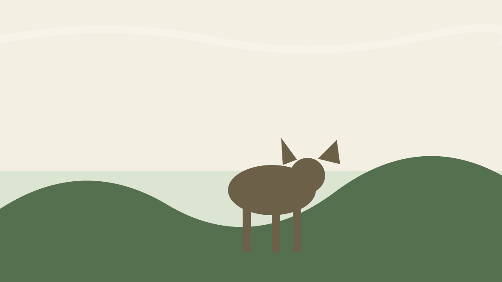
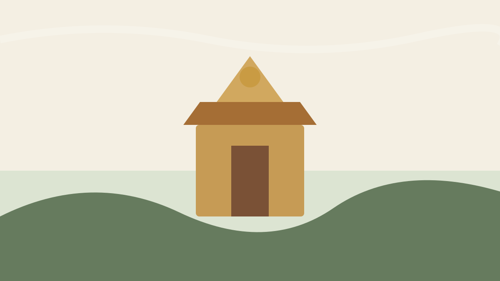

ಕಾಫಿ ಮತ್ತು ಪ್ರಕೃತಿ
Greenway Coffee Island Plantation Tour
ಕಾಫಿ ತೋಟದ ವಾತಾವರಣ ಮತ್ತು ಪ್ರಕೃತಿಯನ್ನು ಹತ್ತಿರದಿಂದ ಅನುಭವಿಸಲು ಸಮೀಪದ ಆಯ್ಕೆ.
ಅಂದಾಜು 11 ನಿಮಿಷಗಳ ಪ್ರಯಾಣ
ಗೂಗಲ್ ಮ್ಯಾಪ್ಸ್ನಲ್ಲಿ ನೋಡಿಸುತ್ತಮುತ್ತ ಅನ್ವೇಷಿಸಿ
ಕಾಫಿ ಅನುಭವಗಳಿಂದ ಜಲಪಾತ, ಬೆಟ್ಟ, ನದಿ ಮತ್ತು ಸಂಸ್ಕೃತಿವರೆಗೆ — ನಿಮ್ಮ ದಿನದ ಪ್ರವಾಸಕ್ಕೆ ಆಯ್ಕೆ ಮಾಡಿಕೊಳ್ಳಬಹುದಾದ ತಾಣಗಳು.

ಕಾಫಿ ತೋಟದ ವಾತಾವರಣ ಮತ್ತು ಪ್ರಕೃತಿಯನ್ನು ಹತ್ತಿರದಿಂದ ಅನುಭವಿಸಲು ಸಮೀಪದ ಆಯ್ಕೆ.
ಅಂದಾಜು 11 ನಿಮಿಷಗಳ ಪ್ರಯಾಣ
ಗೂಗಲ್ ಮ್ಯಾಪ್ಸ್ನಲ್ಲಿ ನೋಡಿ
ಕಾವೇರಿ ನದಿಯ ಮೇಲಿನ ಹಸಿರು ದ್ವೀಪ; ನಿಧಾನವಾದ ಪ್ರಕೃತಿ ವಿಹಾರಕ್ಕೆ ಸೂಕ್ತ.
ಅಂದಾಜು 22 ನಿಮಿಷಗಳ ಪ್ರಯಾಣ
ಗೂಗಲ್ ಮ್ಯಾಪ್ಸ್ನಲ್ಲಿ ನೋಡಿ
ಹಸಿರಿನಿಂದ ಸುತ್ತುವರಿದ ಶಾಂತ ಜಲಾಶಯ; ದೃಶ್ಯ ಮತ್ತು ಛಾಯಾಗ್ರಹಣಕ್ಕೆ ಸೂಕ್ತ.
ಅಂದಾಜು 24 ನಿಮಿಷಗಳ ಪ್ರಯಾಣ
ಗೂಗಲ್ ಮ್ಯಾಪ್ಸ್ನಲ್ಲಿ ನೋಡಿ
ಮಡಿಕೇರಿಯ ಪ್ರಸಿದ್ಧ ನೋಟದ ತಾಣ; ಬೆಟ್ಟ ಮತ್ತು ಕಣಿವೆಗಳ ವಿಶಾಲ ದೃಶ್ಯ.
ಅಂದಾಜು 25 ನಿಮಿಷಗಳ ಪ್ರಯಾಣ
ಗೂಗಲ್ ಮ್ಯಾಪ್ಸ್ನಲ್ಲಿ ನೋಡಿ
ಮಡಿಕೇರಿಯ ಇತಿಹಾಸದ ಪ್ರಮುಖ ಗುರುತು ಮತ್ತು ನಗರ ಪ್ರವಾಸದ ಭಾಗ.
ಅಂದಾಜು 25 ನಿಮಿಷಗಳ ಪ್ರಯಾಣ
ಗೂಗಲ್ ಮ್ಯಾಪ್ಸ್ನಲ್ಲಿ ನೋಡಿ
ನೀರು, ಹಸಿರು ಮತ್ತು ಶಾಂತ ದೃಶ್ಯಗಳಿಗಾಗಿ ಒಂದು ದಿನದ ಪ್ರವಾಸದ ಆಯ್ಕೆ.
ಅಂದಾಜು 31–32 ನಿಮಿಷಗಳ ಪ್ರಯಾಣ
ಗೂಗಲ್ ಮ್ಯಾಪ್ಸ್ನಲ್ಲಿ ನೋಡಿ
ಕಾಫಿ ಮತ್ತು ಮಸಾಲೆ ತೋಟಗಳ ನಡುವೆ ಇರುವ ಜನಪ್ರಿಯ ಜಲಪಾತ.
ಅಂದಾಜು 33 ನಿಮಿಷಗಳ ಪ್ರಯಾಣ
ಗೂಗಲ್ ಮ್ಯಾಪ್ಸ್ನಲ್ಲಿ ನೋಡಿ
ಕಾವೇರಿ ತೀರದ ಪ್ರಕೃತಿ ಮತ್ತು ಆನೆಗಳ ಅನುಭವಕ್ಕೆ ಪ್ರಸಿದ್ಧ ತಾಣ.
ಅಂದಾಜು 35 ನಿಮಿಷಗಳ ಪ್ರಯಾಣ
ಗೂಗಲ್ ಮ್ಯಾಪ್ಸ್ನಲ್ಲಿ ನೋಡಿ
ಬೈಲಕುಪ್ಪೆಯ ಪ್ರಸಿದ್ಧ ಟಿಬೆಟಿಯನ್ ಬೌದ್ಧ ಮಠ ಮತ್ತು ಚಿನ್ನದ ಪ್ರತಿಮೆಗಳ ತಾಣ.
ಅಂದಾಜು 36 ನಿಮಿಷಗಳ ಪ್ರಯಾಣ
ಗೂಗಲ್ ಮ್ಯಾಪ್ಸ್ನಲ್ಲಿ ನೋಡಿಮಂಜು, ಬೆಟ್ಟಗಳ ವಿಶಾಲ ನೋಟ ಮತ್ತು 4x4 ಮಾರ್ಗಗಳಿಗೆ ಜನಪ್ರಿಯ ಎತ್ತರದ ತಾಣ.
ಅಂದಾಜು 1 ಗಂ. 21 ನಿ. ನಿಮಿಷಗಳ ಪ್ರಯಾಣ
ಗೂಗಲ್ ಮ್ಯಾಪ್ಸ್ನಲ್ಲಿ ನೋಡಿನಿಮ್ಮ ನೆಲೆ
ಹೋಂಸ್ಟೇ ಉಲುಗುಳಿ ಗ್ರಾಮದಲ್ಲಿ, ಸೂಂಟಿಕೊಪ್ಪದ ಸಮೀಪದಲ್ಲಿದೆ. ಕೆಳಗಿನ ಸಮಯಗಳು ಅಂದಾಜು ಚಾಲನಾ ಸಮಯಗಳು; ಸಂಚಾರ ಮತ್ತು ರಸ್ತೆಯ ಪರಿಸ್ಥಿತಿಗೆ ಅನುಗುಣವಾಗಿ ಬದಲಾಗಬಹುದು.